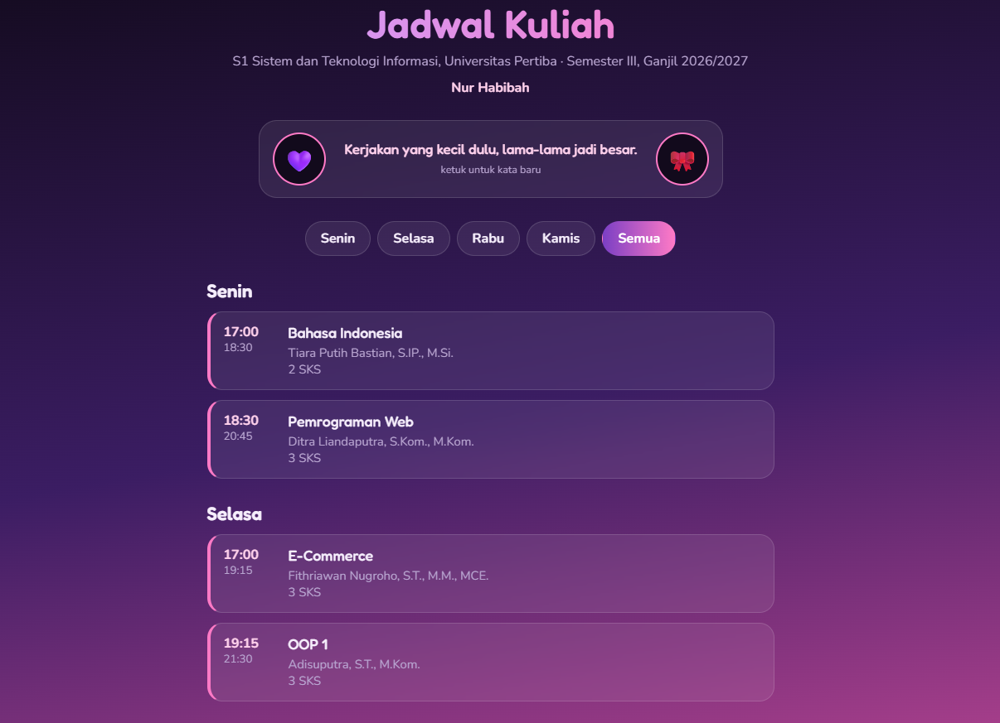
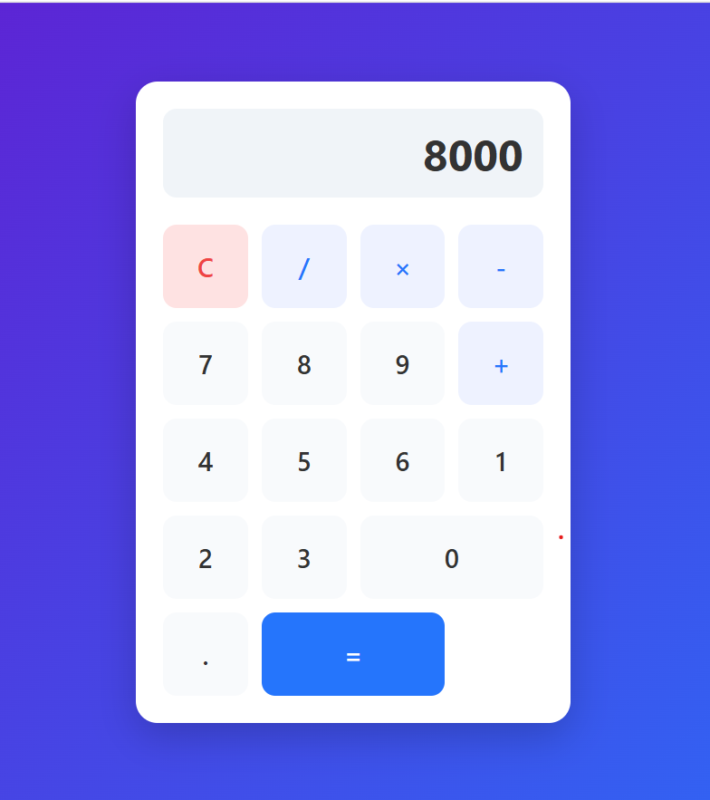
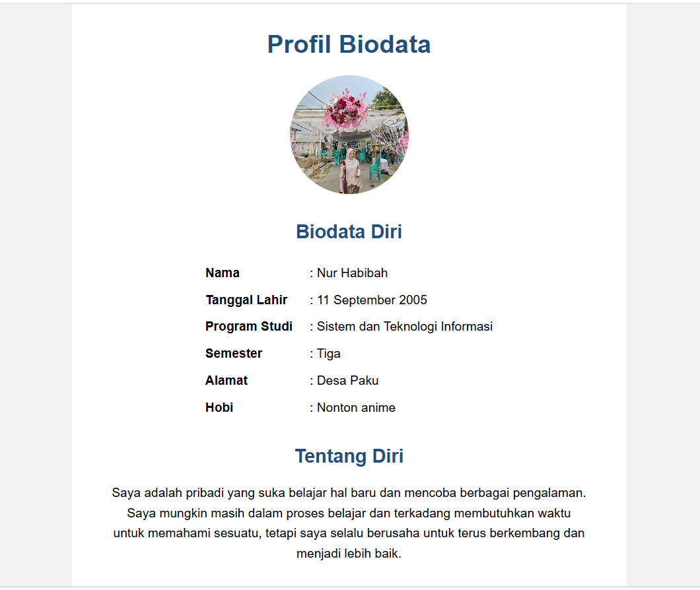
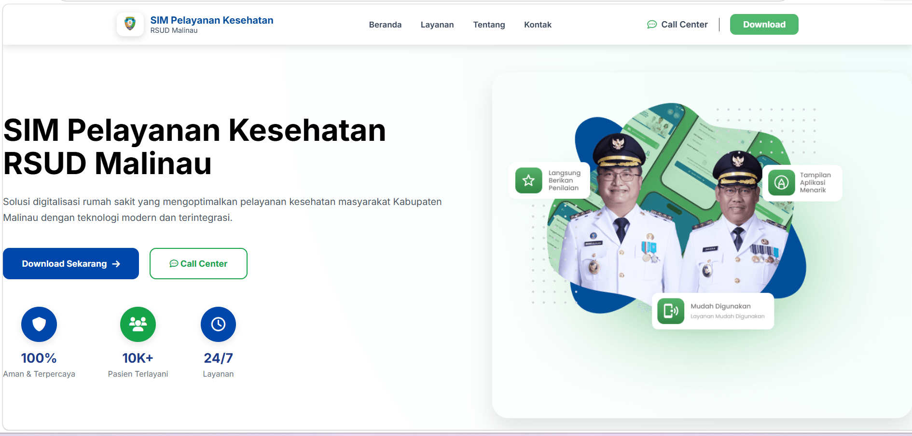
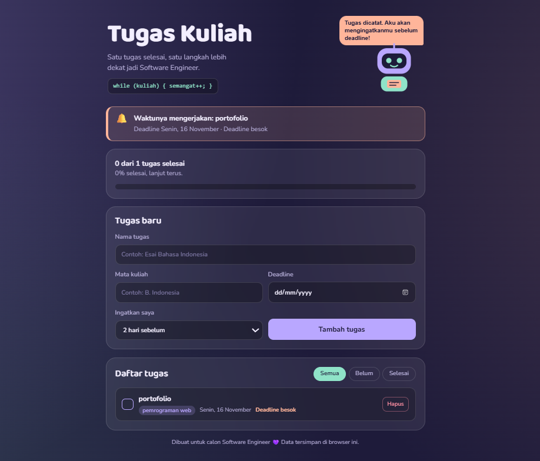
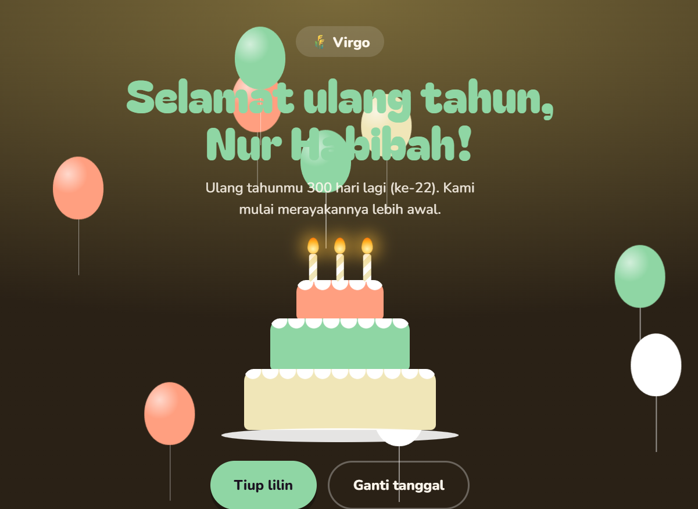

Web
Jadwal Kuliah
Jadwal kuliah mingguan dalam bentuk tabel yang mudah dibaca.
Berikut proyek-proyek yang pernah saya kerjakan selama belajar.

Web
Jadwal kuliah mingguan dalam bentuk tabel yang mudah dibaca.

Utilitas
Kalkulator sederhana dengan tampilan yang rapi dan menarik.

Web
Halaman biodata sederhana yang berisi profil diri.

Web
Website rumah sakit umum daerah yang dibuat sebagai latihan saat mengikuti bootcamp.

Produktivitas
Web pencatat jadwal tugas yang menandai tugas selesai dan belum selesai, dengan pengingat deadline.

Web
Halaman ulang tahun dengan tema berbeda sesuai tanggal lahir dan zodiak.